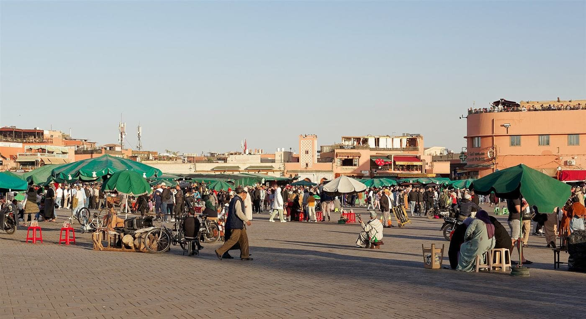

Frequently asked questions
Booking, prices, the Sahara, where you sleep and who you travel with. Everything travelers ask before joining a shared group tour in Morocco.
34 questions, answered
No matching questions. Ask us directly, we reply within 24 hours.
- Max 16 travelers
- Fixed weekly departures
- Tours from €135
- Replies within 24 hours


How do I book a spot on a group tour?
Pick a trip on our Group Tours page and send us your preferred departure date through the contact form. We reply within 24 hours to confirm availability, the final price and payment instructions by email.
Can I pay online on the website?
No payment is taken through this website. You send an enquiry first, we confirm your seat and the final price by email, and nothing is charged until everything is agreed.
Do I need to pay the full amount upfront?
No. A deposit secures your seat and the balance is due before departure. Full details are sent with your booking confirmation.
What is your cancellation policy?
Deposits are refundable up to 14 days before departure. Cancellations within 14 days are handled case by case, so contact us and we will do our best to help.
How far in advance should I book?
October to April is our busiest season and popular routes sell out, so booking a few weeks ahead is a good idea. Outside peak season you can often join with shorter notice. Just ask us about your dates.
Is Shared Morocco Adventures a registered company?
Yes. We are a local company officially registered in Marrakech, Morocco (ICE 002790820000079, IF 50151441), with our own Moroccan guides and drivers. You deal directly with our team, not a middleman. Read more about us.
How big are the groups?
Groups are capped at 16 travelers, and most departures run with between 6 and 16 people. Small enough to stay sociable and personal, large enough to keep prices low.
Who travels on these trips?
A mix of solo travelers, couples and groups of friends from all over the world, mostly in their 20s to 40s, looking for an affordable and sociable way to see Morocco.
Where will I sleep?
In well rated hostels and riads in the cities, kasbah style guesthouses in the mountains and valleys, and a Berber style camp at the edge of the Erg Chebbi dunes on Sahara routes. Each tour page names the exact places. See how shared accommodation works.
Is accommodation private or shared?
Listed prices are based on shared twin or dorm style rooms, and a shared tent at the desert camp. A private room is available on every tour as a paid upgrade, subject to availability. Just ask when you enquire.
Are meals included?
Breakfast is included every day, and dinner is included on half board nights such as the Dades Gorges and the desert camp. Lunches and the remaining dinners are paid locally, which lets you choose anything from street food to a restaurant. Each tour page lists exactly which meals are included.
What languages do the guides speak?
Our driver guides speak English and French. They are Moroccan, born and raised here, and know the routes and stories well.
What is the best Sahara desert tour from Marrakech?
For most travelers it is the 4 Day Sahara Desert Group Tour: Ait Benhaddou, the Dades Gorges, a camel trek and a night at a desert camp in Merzouga, from €249. If you prefer a slower pace choose the 5 Day Marrakech, Atlas and Sahara Adventure, and if you want to finish in Fes choose the 6 Day Marrakech, Sahara and Fes Tour.
How long is the drive from Marrakech to the Sahara?
Merzouga is roughly 445 km from Marrakech, about 8 hours of driving before stops, over the Tizi n'Tichka pass and through the valleys. That is why our tours split it over two days with a night in the Dades Gorges. See the day by day route.
Is the camel ride included?
Yes. Every Sahara route includes a camel ride into the Erg Chebbi dunes and one night at the desert camp. Here is what the camel trek is like.
What is the desert camp like?
A Berber style camp at the edge of the dunes with shared tents, dinner and breakfast included, campfire music and a sky full of stars. Facilities are simple by design. The 8 day Sahara, Fes and Chefchaouen tour uses a private luxury camp with en suite tents. Read the desert camp guide.
Is it cold in the desert at night?
Yes, even in summer the desert cools down fast after sunset, and winter nights can be close to freezing. Bring a warm layer, a scarf or hat for sun and wind, and comfortable shoes. See our Sahara packing list.
When is the best time to visit the Sahara?
October to April is the most comfortable season, with warm days and cool nights. Summer days can be very hot, so tours still run but the best moments are sunrise and sunset. Read the month by month guide.
Where do the tours start and end?
Most routes start in Marrakech, and some start in Fes or Casablanca. Several tours include airport pick up on day one and drop you at your accommodation at the end. The details are on each tour page, or ask us if you need a different city.
Do you offer airport transfers?
Yes, from Marrakech Menara and Fes Saiss airports. In Marrakech a shared shuttle is from €12 per person and a private transfer from €30 per vehicle. In Fes a shared shuttle is from €25 per person and a private transfer from €40 per vehicle. See airport transfers.
Do you run day trips from Marrakech and Fes?
Yes. Shared day trips from Marrakech start from €15 and include the Ourika Valley, the Agafay Desert, Essaouira, Ouzoud Waterfalls and Ait Benhaddou. Day trips from Fes start from €19 and include Chefchaouen, Meknes and Volubilis, and Ifrane.
How much luggage can I bring?
One large suitcase and one carry on per person. On routes with a desert night we suggest a small overnight bag for the camp, and on some tours your main luggage can stay stored at the Marrakech hostel. Tell us about extra luggage when booking.
What should I pack for a Morocco group tour?
Layers, because temperatures swing a lot between day and night in the desert and mountains. Bring sun protection, comfortable walking shoes, a warm layer for desert nights and clothes that cover shoulders and knees for towns and villages. Here is our complete packing list.
Do I need a visa for Morocco?
Citizens of more than 60 countries, including the EU, UK, US, Canada and Australia, can visit Morocco visa free for up to 90 days. You get a passport stamp on arrival, with no visa to arrange in advance. Always check the rules for your nationality before you travel. See our visa guide.
Do I need travel insurance?
Yes, travel insurance is required for all our trips and is not included in the trip price.
Is Morocco safe for travelers?
Morocco is one of the safer countries in North Africa for tourism and violent crime against travelers is rare. The main issues are hassle from touts and a few well known scams, which a local guide helps you avoid. Read is Morocco safe and our guide for solo female travelers.
How much cash should I bring?
Bring some cash in Moroccan dirhams for lunches, entrance fees, tips and small purchases, since many places in the countryside do not take cards. ATMs are easy to find in the cities. See our guide to money in Morocco.
What is the best time to visit Morocco?
Spring (March to May) and autumn (September to November) bring the most comfortable weather across the country. Winter is great for the desert and cities, while summer is hot inland but pleasant on the coast. Read the best time to visit Morocco.